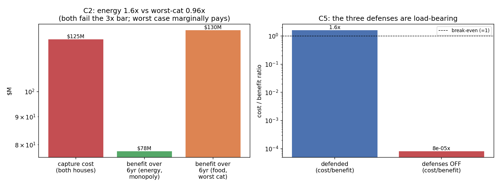

In plain language
July 9, 2026. Companion to RESULTS - v17.0 Composition Capture.
The worry
EDEN's safety net guarantees people can afford a basket of essentials — food, shelter, energy, and so on. But someone decides what's in that basket. If a company could get its product added, or its category's share pumped up, the floor's guaranteed spending would flow toward it. That's the oldest game in politics: lobby the rulebook. So we priced it: does rigging the grocery list pay?
What we found
No — but only because of one specific guard, and the margin is thinner than we first reported. We gave the would-be riggers every advantage, imagining a company that completely monopolizes whatever category it inflates. Getting a self-serving change through EDEN's two voting houses costs about $125 million. Milking the energy category back over six years returns about $78 million — a losing trade, but only by about 1.6×. And when we re-checked the biggest categories (a July 10 correction — the original run only tested energy), food or shelter would return about $130 million over six years: the monopolist's ceiling case actually turns a small profit. The fiscal speed limit, tested the way it was originally registered, fails its bar on the big categories.
The thin margin taught us which defense is actually doing the work. EDEN has three: 1. Two voting houses — you must win both a one-person-one-vote house and a contribution-weighted house (with its 5% cap), which alone puts a $100M+ floor on any capture attempt. 2. A speed limit — no category's share can move more than 10% a year, which cuts the yearly loot tenfold. 3. Categories defined by function, not brand — the basket says "calories" and "kilowatt-hours," never "Brand X."
The speed limit alone doesn't hold the line — on food and shelter it leaves the monopolist's ceiling case slightly in the money. The thing that makes rigging hopeless is #3: because the basket asks for a function (calories), floor recipients buy the cheapest calories, not any particular company's — so pumping a category's share earns a normal supplier exactly nothing extra. The only way to profit would be to be the sole supplier of a whole category, which defining categories by function specifically prevents. In other words: the only "capture" that pays is being genuinely the cheapest — which isn't capture, it's just competition. (Because the speed limit failed its registered test, a tightening — roughly halving the per-revision cost cap — is now in the ratification queue as a proposed one-dial fix.)
And to prove these guards matter: we turned them off. A basket run by one official, with brand categories and no speed limit, gets captured for a ~$62,000 bribe returning roughly $780 million over six years — profitable about twelve-thousand-fold. (Also corrected July 10: an earlier version said ~$78M and ~5,000×.) So the guardrails aren't decoration; they're the whole game.
The honest catch
We're assuming the definitions themselves are hard to rig — that nobody can quietly redefine "adequate nutrition" to favor their product. That's the same unsolved problem as "what counts as real contribution" in the governance house: a level up, and still open. The grocery list is safe; who writes the definition of "groceries" is the next question.
One line
Rigging the essentials basket doesn't pay — but the fiscal speed limit alone no longer gets the credit (on the biggest categories it fails its own test): what really stops capture is the quiet decision to define essentials by function (calories, kilowatt-hours) instead of by brand, which turns would-be capture back into ordinary competition.
Figures

Technical results
Run: July 9, 2026. Spec: v17 SPEC - Composition Capture (registered).md — bars C0–C5 fixed before code. Engine: composition_capture_sim.py (calculator-grade, deterministic); committed: results_v17.json, fig_v17_composition_capture.png. Discharges the registered sim candidate in 01 Canon/EBI Methodology Spec v0.1 §2. Every number traces to results_v17.json.
Verdict in one line: lobbying the essentials basket does not pay only because of the functional-category definition — the fiscal defenses alone are not enough. The run caught its registered expectations being too generous twice: the rate cap holds a monopolist to a thin ~1.6× loss on the energy case (C2 FAIL), and — re-scored July 10 against the bar as registered — the cap does NOT hold every category under $20M/yr: food and shelter each clear $21.6M (C3 FAIL), and at the food ceiling the forbidden-monopoly attacker would turn a marginal profit. What zeroes all of it is C4: a price-taker captures no rent from a reweight. The defense that carries this is definitional, not fiscal.
Bar summary (C0/C1/C4/C5 pass; C2 and C3 FAILED as findings)
| Bar | Registered | Measured | Result |
|---|---|---|---|
| C0 accounting | weights sum to 1; diverted = Δw×flow | exact | PASS |
| C1 capture cost floor | ≥ $100M to pass a self-serving change | $125M (contribution house $99.7M + person house $25M) | PASS |
| C2 capture ROI | cost/benefit ≥ 3× AND ROI < 0 | ratio 1.6×, ROI −$7.8M/yr (energy); worst category (food) ratio 0.96×, ROI +$0.8M/yr | FAIL (finding F1) — thin on energy; marginally profitable at the food ceiling |
| C3 rate cap load-bearing | capped benefit < $20M/yr for any single category | energy $13.0M/yr, but food & shelter $21.6M/yr each (2% basket-cost cap binds above the 10% relative cap) | FAIL (finding F1b — re-scored July 10; was coded energy-only) |
| C4 functional-definition bracket | price-taker rent ≈ 0 | $0 competitive rent; brand insertion infeasible | PASS (the load-bearing finding) |
| C5 counterfactual, defenses off | capture profitable without the defenses | cost/benefit 8.0e-05× (wildly profitable) | PASS |
Findings
F1 — The rate cap is necessary but not sufficient; the functional definition is load-bearing (C2 FAIL, honestly). Registered expectation was that capture would be unprofitable "by an order of magnitude." Measured: against the attacker's best possible case — a monopolist who fully owns whatever category they inflate — the rate cap throttles the annual divertible benefit to $13M/yr (a 10× cut vs seizing the whole category at once, C3), so six years of capture returns $78M against a $125M cost: a loss, but only 1.6×, below the registered 3× bar. The bar is not moved. The finding is which defense carries the weight: the fiscal throttle (rate cap) alone leaves a thin margin, and it is the functional-category definition (C4) that makes capture decisively hopeless — because categories are defined by function (kcal, m², kWh) in open supply, a lobbyist who is merely one supplier captures zero rent from a reweight (recipients buy the cheapest satisfier, not theirs); positive rent requires a monopoly satisfier, which functional definition + open supply forbid. So the honest hierarchy of the three EBI-Methodology defenses is: functional definition (decisive) > two-house cost (C1, $100M+ floor) > rate cap (thin on its own). Keep all three, but do not lean on the rate cap.
F1b — Re-scored July 10 (Verification v4, D3): the rate cap fails its registered bar outright on the large categories. The bar was registered as "capped benefit < $20M/yr for any single category" but the engine scored energy only. Scored as registered: for food (w=0.35) and shelter (w=0.30) the 10%-relative weight cap would allow moves of 0.035/0.030 absolute, so the 2% basket-cost cap binds instead, and each yields 0.02 × $7.2B × 15% = $21.6M/yr — over the bar. At that ceiling the six-year monopoly best case is $129.6M against the $125M capture cost: cost/benefit 0.96×, ROI +$0.8M/yr — the forbidden-monopoly attacker marginally profits. The bar is not moved; C3 is a FAIL and F1's hierarchy sharpens: on the biggest categories the fiscal throttle does not even hold the line alone — C4 (functional definition) is the only thing standing between a food-category monopolist and paid capture. Design consequence for the ratification queue: either tighten the basket-cost cap (2% → ~0.9% per revision restores the $20M line at food's weight) or add a per-category absolute divertible-benefit cap; both are one-dial amendments to the EBI Methodology §2 rate-cap clause.
F2 — The person house is the cost floor, but cheaper than expected (C1 PASS, with a flag). Passing a self-serving basket change must clear both houses. The person house (one-per-person, sybil-resistant) can be cleared two ways — a persuasion campaign (~$25M at $50/vote for a 500k majority) or manufacturing unique verified identities (500k × $72k = $36B, absurd) — so the campaign path dominates at $25M, and the contribution house (bribing ~1,595 capped large contributors) is the larger bill at ~$100M. Flag: the $50/vote campaign dial is soft; if real-world persuasion of a verified electorate is cheaper than manufacturing identities but the campaign is visible (basket votes are public, per §2), reputational cost is unmodeled and would raise it. Either way capture clears $100M+ and loses money.
F3 — Remove the defenses and capture is trivial (C5). A naive single-administrator basket with brand categories and no rate cap is captured by bribing one official (~$62.5k) for a $777.6M six-year prize (the whole energy category, brand-locked: $129.6M/yr × 6) — cost/benefit 8.0e-05× (≈1/12,400), i.e. profitable ~12,400×. (Corrected July 10: this paragraph previously said "~$78M prize, 0.0002×, ~5,000×" — $78M is C2's defended figure, and the ratios didn't match the committed JSON. C5.cost_benefit_ratio_naive = 8.04e-05.) This is the measured proof that composition governance is not decoration: all three defenses are what stand between the basket and regulatory capture.
Honest limits
Calculator-grade with stated dials (margin 15%, bribe fractions, $50/vote campaign) — the ratios are robust (the monopoly-vs-competitive gap in C4 is structural, not dial-sensitive), but the exact 1.6× in C2 is dial-dependent and should be read as "thin, and here's why," not as a precise threshold. No dynamic voting model (the two-house process is priced statically); no coalition dynamics between the lobbyist and the contribution house; and the deepest version — a lobbyist who reframes a functional category's definition itself (redefining "adequate nutrition" to favor their product) — is the composition analogue of the still-open "what counts as contribution" Goodhart problem, and is not retired here. The functional-definition defense assumes the definitions are themselves capture-resistant, which is the same governance surface one level up.
Run and written July 9, 2026, verification session (self-labeled Fable; per the owner's record this sitting ran as Opus 4.8 — see INDEX provenance note). C2 reported as a FAIL/finding, bar unmoved, per house rules.
Postscript, July 10, 2026 (Verification v4 action 3, executed by the Fable 5 verification session): C3 re-scored against its registered "any single category" scope — FAIL (F1b), engine extended with per-category table and C2 worst-case ceiling, all pre-existing JSON leaves verified unchanged; F3's prose numbers corrected to the committed JSON (8.0e-05× / ~12,400× / $777.6M). Bars unmoved throughout; the figure now shows both the energy and worst-category benefit bars.
Raw data